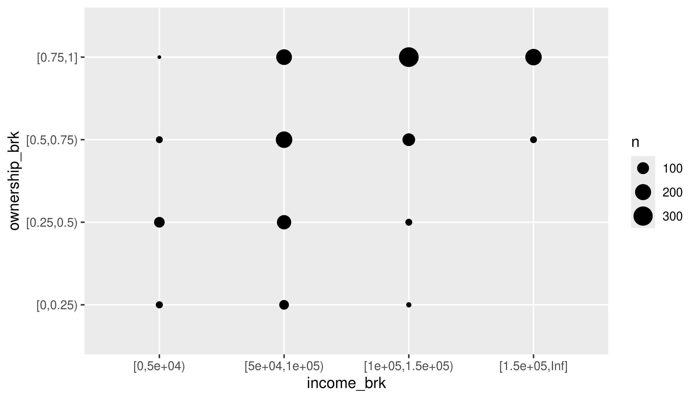

4. Learning about your data
From Wickham et al. (2023), Exploratory Data Analysis chapter:
There is no rule about which questions you should ask to guide your research. However, two types of questions will always be useful for making discoveries within your data. You can loosely word these questions as: - What type of variation occurs within my variables? - What type of covariation occurs between my variables?
We’ll follow the steps of the EDA chapter using the acs dataset in the {justviz} package. For simplicity, we’ll focus on Maryland census tracts and just a few variables dealing with housing and income.
acs_tr <- acs |>
filter(level == "tract") |>
select(county, name, total_pop, total_hh,
homeownership, total_cost_burden, renter_cost_burden,
owner_cost_burden, no_vehicle_hh, median_hh_income, pop_density)
knitr::kable(head(acs_tr))| county | name | total_pop | total_hh | homeownership | total_cost_burden | renter_cost_burden | owner_cost_burden | no_vehicle_hh | median_hh_income | pop_density |
|---|---|---|---|---|---|---|---|---|---|---|
| Allegany County | 24001000100 | 3474 | 1577 | 0.78 | 0.18 | 0.39 | 0.12 | 0.06 | 56232 | 18.48533 |
| Allegany County | 24001000200 | 4052 | 1390 | 0.86 | 0.20 | 0.33 | 0.18 | 0.04 | 66596 | 84.29020 |
| Allegany County | 24001000500 | 2304 | 683 | 0.60 | 0.20 | 0.36 | 0.09 | 0.13 | 47781 | 520.91879 |
| Allegany County | 24001000600 | 3005 | 1374 | 0.70 | 0.20 | 0.36 | 0.14 | 0.10 | 48607 | 1898.93501 |
| Allegany County | 24001000700 | 3233 | 1462 | 0.49 | 0.37 | 0.48 | 0.25 | 0.25 | 36090 | 4538.49941 |
| Allegany County | 24001000800 | 1932 | 786 | 0.48 | 0.52 | 0.68 | 0.35 | 0.17 | 27130 | 1529.51773 |
county name total_pop total_hh
Length:1460 Length:1460 Min. : 5 Min. : 0
Class :character Class :character 1st Qu.: 2960 1st Qu.:1120
Mode :character Mode :character Median : 4026 Median :1528
Mean : 4220 Mean :1588
3rd Qu.: 5358 3rd Qu.:1999
Max. :14109 Max. :4644
homeownership total_cost_burden renter_cost_burden owner_cost_burden
Min. :0.0000 Min. :0.0400 Min. :0.00 Min. :0.0000
1st Qu.:0.5000 1st Qu.:0.2100 1st Qu.:0.31 1st Qu.:0.1600
Median :0.7400 Median :0.2800 Median :0.44 Median :0.2100
Mean :0.6752 Mean :0.2932 Mean :0.43 Mean :0.2181
3rd Qu.:0.8800 3rd Qu.:0.3700 3rd Qu.:0.55 3rd Qu.:0.2700
Max. :1.0000 Max. :0.7400 Max. :1.00 Max. :1.0000
NA's :4 NA's :4 NA's :7 NA's :12
no_vehicle_hh median_hh_income pop_density
Min. :0.00000 Min. : 10000 Min. : 1.05
1st Qu.:0.02000 1st Qu.: 70525 1st Qu.: 984.33
Median :0.05000 Median : 98164 Median : 3413.10
Mean :0.09468 Mean :104585 Mean : 4968.47
3rd Qu.:0.12000 3rd Qu.:132052 3rd Qu.: 6822.62
Max. :0.85000 Max. :250001 Max. :57424.37
NA's :4 NA's :6 What types of values do each of these variables represent? Why are their scales so different?
Variation
First a histogram of median household income values:
`stat_bin()` using `bins = 30`. Pick better value with `binwidth`.Warning: Removed 6 rows containing non-finite values (`stat_bin()`).There’s a message and a warning: the message suggests being intentional about the number of bins, and the warning calls our attention to missing values in this column.
Use the next few chunks of code to experiment with bin specifications. Does your understanding of the data’s distribution change?
ggplot(acs_tr, aes(x = median_hh_income)) +
geom_histogram(bins = 50) # bins can be determined by setting the number of binsWarning: Removed 6 rows containing non-finite values (`stat_bin()`).ggplot(acs_tr, aes(x = median_hh_income)) +
geom_histogram(binwidth = 10000) # or by the width of bins, with a scale corresponding to the x-axisWarning: Removed 6 rows containing non-finite values (`stat_bin()`).What are some values of bins or binwidth that seem reasonable? At what point do either of them start to obscure data?
As for the missing values:
| county | name | total_pop | total_hh | homeownership | total_cost_burden | renter_cost_burden | owner_cost_burden | no_vehicle_hh | median_hh_income | pop_density |
|---|---|---|---|---|---|---|---|---|---|---|
| Anne Arundel County | 24003740400 | 4241 | 0 | NA | NA | NA | NA | NA | NA | 6000.504539 |
| Anne Arundel County | 24003980000 | 5 | 0 | NA | NA | NA | NA | NA | NA | 1.048504 |
| Washington County | 24043011000 | 5212 | 0 | NA | NA | NA | NA | NA | NA | 3049.954209 |
| Baltimore city | 24510100300 | 1999 | 0 | NA | NA | NA | NA | NA | NA | 33122.764732 |
| Baltimore city | 24510190300 | 2122 | 839 | 0.20 | 0.48 | 0.52 | 0.34 | 0.68 | NA | 15572.409097 |
| Baltimore city | 24510250600 | 11 | 11 | 0.55 | 0.55 | 0.00 | 1.00 | 0.00 | NA | 5.033091 |
Even though we’re probably not going to use the total population and total household variables for any analysis here, I kept them because those sorts of variables that define what your observational unit is are important for checking what’s going on in your data. By which I mean a census tract is made up of a bunch of people (usually about 4,000) in a contiguous area who mostly live in households. But if you work with census data enough, you’ll know that some places have population but few households, or only very small populations altogether—a tract might actually be a jail or a set of college dorms, or maybe the majority of a tract is those sorts of group quarters, and the remainder is too small to reliably calculate some of the data. What we want to do with those tracts can depend on context, but I’ll drop them here.
Typical values
Does anything seem weird about the median household income values? Look back at Figure 1 where it may be more apparent. (We’ll talk about this anomaly in the data.)
Switching to cost burden rates:
This approaches a normal curve, but is skewed. From the histogram, the mean looks to be around 0.3 (looking back at the summary, this is correct), but with quite a few tracts with higher rates. Because this is a proportion, we don’t expect there to be any values below 0 or above 1.
A boxplot can make it a little easier to figure out what’s typical in your distribution.
Unusual values
There are a few tracts that are extremely dense. If we wanted to get a sense of more typical tracts, we could filter those, either from the data or within the limits of the chart:
acs_tr2 |>
filter(pop_density < 30000) |>
ggplot(aes(x = pop_density)) +
geom_histogram(binwidth = 1000)# if you want bars to be between tick marks instead of centered over them, set boundary = TRUE
acs_tr2 |>
ggplot(aes(x = pop_density)) +
geom_histogram(binwidth = 1000, boundary = TRUE, color = "white") +
scale_x_continuous(limits = c(NA, 30000))Warning: Removed 8 rows containing non-finite values (`stat_bin()`).Warning: Removed 1 rows containing missing values (`geom_bar()`).We could decide to investigate those high-density tracts. For example, if we’re interested in housing costs, we might drop tracts that seem to mostly be dorms. However, at least these tracts in Montgomery County are actually high-rise condos bordering DC, so we should keep them in.
Covariation
Especially when we talk about housing and socio-economic data, we expect things to be correlated—probably even more so than with naturally occurring phenomena, since so much of where we live and what resources we have are determined by history and policy decisions. So it shouldn’t surprise you to find correlations in data like this. In fact, the CDC PLACES dataset uses demographic data to model health measures where they don’t have direct measurements available, so in cases like that you actually want to lean away from digging into correlations too much, or you might end up just confirming the makeup of the model, not finding anything new.
A categorical and a numerical variable
I’ll reshape the data to get housing tenure into one categorical variable. (If this code doesn’t make sense it’s okay.)
cost_burden <- acs_tr2 |>
tidyr::pivot_longer(cols = matches("cost_burden"),
names_to = c("tenure", ".value"), # split column names into tenure and the name of the measure (cost_burden)
names_pattern = "(^[a-z]+)_(\\w+$)", # use regex to match a set of lowercase letters at the start of the string, followed by an underscore, then match word characters until the end
names_ptypes = list(tenure = factor())) |>
filter(!is.na(cost_burden))The bit about calling after_stat in the book chapter doesn’t apply here, since we have the same number of observations for each tenure.
Two categorical variables
This is a pretty contrived example to match section 10.5.2, but I’ll bin homeownership and housing cost burden into categorical variables, and look at these by county.
acs_tr2 |>
mutate(ownership_brk = cut(homeownership,
breaks = c(0, 0.25, 0.5, 0.75, 1),
include.lowest = TRUE, right = FALSE)) |>
mutate(income_brk = cut(median_hh_income,
breaks = c(0, 5e4, 1e5, 1.5e5, Inf),
include.lowest = TRUE, right = FALSE)) |>
count(income_brk, ownership_brk) |>
ggplot(aes(x = income_brk, y = ownership_brk)) +
geom_point(aes(size = n)) +
scale_size_area()
See if you can adjust the code to use tiles and a color (fill) scale.
Two numerical variables
Same variables, without the binning
Use the methods in the book (changing alpha or using a 2D density) to deal with overplotting here.